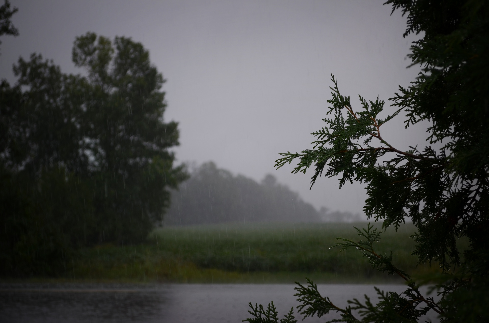

Harsh vasita
I think monsoon is the best season among the other two, fall & summer.

- Monsoon are nature's rejuvenators that provide life, harmony, and elegance to the world.
Unlike the scorching heat of summer or the languid dryness of autumn, monsoon temper the air,
cleanse the surroundings, and recycle vital water supplies. They feed crops, fill rivers and lakes,
and sustain the ecosystem, keeping it alive and healthy. Monsoon also clean the atmosphere,
clear out dust and pollutants, and provide relief from the suffering of hot or dry conditions.
- Besides their environmental worth, monsoon also bring with them serenity and creativity.
The soothing sound of raindrops, the scent of rain-kissed soil, and the clean smell of
rain create a serene and relaxing atmosphere. While summer is exhausting and autumn is devastation,
monsoon are renewal and growth. Not only do they sustain but they also lighten one's mood, making them
infinitely better than summer and autumn both for beauty and purpose.